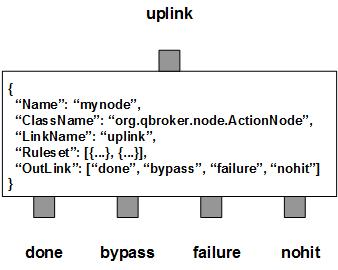

ActionNode processes incoming JMS messages and takes the predefined actions according to the rulesets and the content of the incoming messages. As the escalation of actions, ActionNode may generate a new JMS message. All the escalation messages will be routed to the outlink of done. For all the incoming messages, ActionNode routes them into three outlinks: bypass for all the processed incoming messages, nohit for those messages do not belong to any rulesets, failure for the incoming messages failed in the process.
ActionNode contains a number of predefined rulesets. These rulesets categorize incoming messages into non-overlapping groups. Therefore, each rule defines a unique message group. The ruleset also defines its actions and the rules to generate new messages for the group. Different groups may have different actions and/or different parameters. For an escalation message, ActionOrder determines its delivery order relative to the incoming message. ActionOrder takes one of the three values: "none", "first" and "last". By default, it is set to "none" and there is no order defined on the newly generated messages. If it is set to "first", ActionNode will send out the new message first and wait for its delivery. Then it will have the incoming message going through the bypass outlink. If it is set to "last", the incoming message will go through the bypass outlink first. Upon the completion of its delivery, ActionNode sends the escalation message through the outlink of done.
The default action of ActionNode is to escalate messages in different message types. For example, if the incoming message is a MapMessage, the escalated message can be a TextMessage. If FormatterArgument is defined, the incoming message will be duplicated and then be formatted based on the list of format operations. It is similar to FormatNode, except for that it only formats the escalated messages. It is also similar to DuplicateNode, except for that the only copy will be formatted before the escalation.
Apart from the user defined rulesets, ActionNode always creates one extra ruleset, nohit. The ruleset of nohit is for those messages not hitting any patterns. Please remember, there is no one-to-one relationship between the candidate messages and the escalation messages. The escalation messages will be stored into the RULE_PEND field of the rulesets. The rule-level property displaying and resetting are mutual-exclusively determined by the DisplayMask and the StringProperty of their own rulesets. If DisplayMask is not defined in a ruleset or it is set to 0 or -1 (by default), its StringProperty will be used to reset the string properties of the escalation messages. Otherwise, its StringProperty will only be used to display the details of the escalation messages. On the node level, DisplayMask and StringProperty control the displaying result of all incoming messages. But if the DisplayMask of a ruleset is set to -1, that rule will inherit the DisplayMask and the StringProperty from the node for display control on the rule level.
ActionNode also supports customized actions via plugins. In this case, the full ClassName of the plugin and its ActionArgument must be well defined in the ruleset. The developer of the plugin action is supposed to document the details of ActionArgument. ActionNode will load the plugin and invokes the action on the messages of the ruleset.
You are free to choose any names for the four fixed outlinks. But ActionNode always assumes the first outlink for done, the second for bypass, the third for failure and the last for nohit. Any two or more outlinks can share the same outlink name. It means these outlinks are sharing the same output channel.
The operation is executed via the pre-defined rulesets. Therefore, the configuration of the rulesets is critical to the operations of ActionNode. Here are complete properties of rulesets for ActionNode.
| Property Name | Data Type | Requirement | Description | Examples |
|---|---|---|---|---|
| Name | alphanumeric with no spaces | mandatory | name of the ruleset | event |
| ActionOrder | string | optional | for action order | last (default: none) |
| MessageType | string | mandatory for type conversion only | message type for the escalated messages | jms_map |
| ClassName | alphanumeric with no spaces | optional | full classname of the plugin formatter | |
| ActionArgument | object | optional | configuration data for action plugin | see example |
| PreferredOutLink | alphanumeric with no spaces | mandatory for bypass only | name of the preferred outlink | bypass |
| FormatterArgument | list | optional | list of post format operations for the escalated messages only | see example |
| JMSPropertyGroup | list | optional | list of pattern groups on properties to select messages | see example |
| XJMSPropertyGroup | list | optional | list of pattern groups on properties to exclude messages | see example |
| PatternGroup | list | optional | list of pattern groups on body to select messages | see example |
| XPatternGroup | list | optional | list of pattern groups on body to exclude messages | see example |
| StringProperty | map | optional | for setting the user properties on the messages, or logging | see example |
| DisplayMask | integer | optional | the mask controls what to log on the processed messages for the ruleset | 6 (default: 0) |
{
...
"Ruleset": [{
"Name": "bypass",
"PreferredOutLink": "BYPASS",
"JMSPropertyGroup": [{
"JMSType": "^score$"
}]
}],
...
}
where it routes the messages to the outlink of BYPASS.
Here is an example of the default action ruleset.
{
...
"Ruleset": [{
"Name": "toText",
"JMSPropertyGroup": [{
"BodyType": "^map$"
}],
"MessageType": "jms_text"
}],
...
}
where it assumes that the incoming messages of the group are MapMessages. The
ruleset converts the MapMessage into a TextMessage and escalates it.
Here is an example of ActionNode:
{
"Name": "node_action",
"ClassName": "org.qbroker.node.ActionNode",
"Description": "react upon messages",
"Operation": "escalate",
"LinkName": "omn",
"Capacity": "32",
"DisplayMask": "6",
"Debug": "1",
"XAMode": "1",
"Ruleset": [{
"Name": "notice",
"ActionOrder": "last",
"DisplayMask": "0",
"JMSPropertyGroup": [{
"JMSTimestamp": "."
}],
"FormatterArgument": [{
"FiledName": "JMSPriority",
"DataType": "int",
"Template": ["3"]
},{
"FiledName": "name",
"Template": ["MSF"]
},{
"FiledName": "category",
"Template": ["CLUSTER"]
}]
}],
"OutLink": [
"escalation",
"bypass",
"failure",
"nohit"
]
}
where it duplicates the messages, formats them and escalates them.